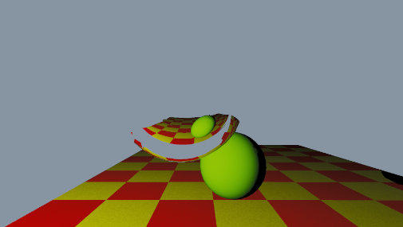
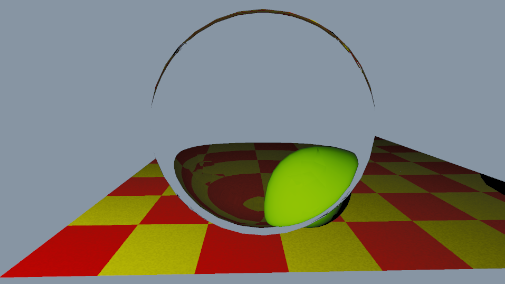
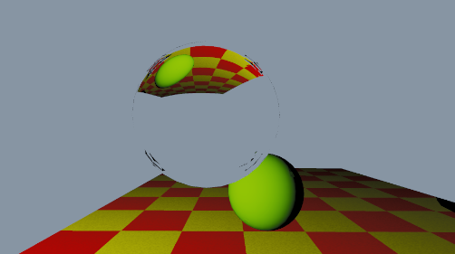
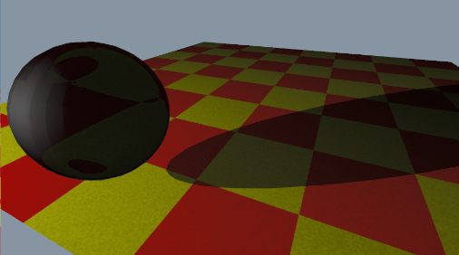
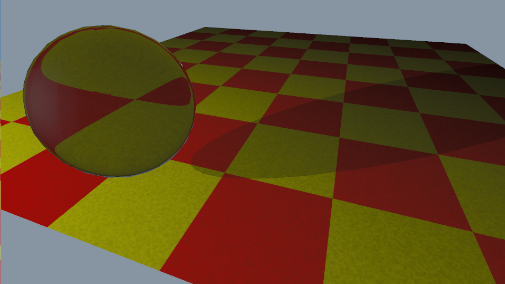
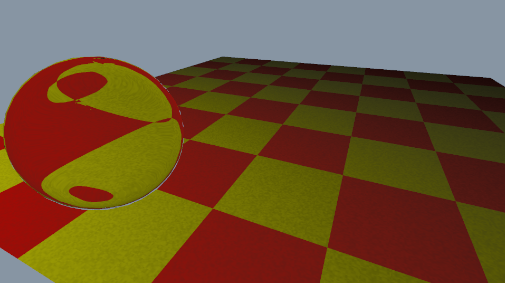

Recursive Ray Tracing – Transmission
But I wrote it as iterative. 2

ior=0.8

ior=1.1 camera is not at the same position.

ior=2.4

kt=0.1

kt=0.5

kt=1.0
Implementation Overview
Due to the nature of Unity compute shader, I had to write it in iterative manner.
But this leads to a problem that I couldn't split ray at every bounce. So I had to pick either reflection or refraction at each intersection.
Inside bounce loop
// Compute shader
// inside a for loop
// normal
float3 geometricNormal = normalize(cross(tri.v1 - tri.v0, tri.v2 - tri.v0)); //not smoothed
float3 shadingNormal = GetSmoothNormal(hitPos, tri); //default using smoothed normal
// view (hitpoint to cam)
float3 V = normalize(-currentDirection); // k2
// Direct lighting is scaled by (1 - kTransmission): fully transparent surfaces contribute no diffuse/ambient
float directWeight = 1.0 - mat.kTransmission;
irradiance += throughput * directWeight * ComputeDirectLighting(hitPos, shadingNormal, V, mat, uv, tri);
//reflection / refraction
if (mat.kTransmission > 0)
{
float cosTheta = dot(currentDirection, shadingNormal);
float eta1, eta2;
if(cosTheta < 0) // outside to inside
{
eta1 = 1.0; // air
eta2 = mat.ior; // material
}
else // inside to outside
{
eta1 = mat.ior;
eta2 = 1.0;
shadingNormal = -shadingNormal; // flip normal to point into incident medium
}
float eta = eta1 / eta2;
float3 refractedDir = refract(currentDirection, shadingNormal, eta);
if (length(refractedDir) == 0) // Total internal reflection, treat as reflection
{
currentDirection = reflect(currentDirection, shadingNormal);
currentOrigin = hitPos + shadingNormal * SHADOW_BIAS;
throughput *= mat.kTransmission;
}
else
{
currentDirection = refractedDir;
currentOrigin = hitPos - shadingNormal * SHADOW_BIAS; // move slightly inside to avoid self-intersection
throughput *= mat.kTransmission;
}
}
else if (mat.kReflection > 0)
{
currentDirection = reflect(currentDirection, shadingNormal);
currentOrigin = hitPos + shadingNormal * SHADOW_BIAS;
throughput *= mat.kReflection;
}
else
{
break;
}
Code explaination
- Problem: Checks kt then kr, only picks one route.
- There are some artifacts through the refraction that I don't know how to fix.
Shadow with transparent materials
// Compute shader
// Shadow Ray
float shadowAttenuation = 1.0;
float3 shadowOrigin = hitPos + normal * SHADOW_BIAS; // avoid self-intersection
{
float shadowT;
int shadowTriIndex;
bool shadowHit = FindClosestIntersect(shadowOrigin, L, distToLight, shadowT, shadowTriIndex);
if (shadowHit && shadowT > SHADOW_BIAS && shadowT < distToLight)
{
Material shadowMat = _Materials[_Triangles[shadowTriIndex].materialIndex];
shadowAttenuation = shadowMat.kTransmission;
}
}
if (shadowAttenuation > 0)
{
irradiance += shadowAttenuation * (specularResult + diffuseResult) * effectiveLight * dotNL;
}
Code explaination
- Old implementation was simply do not add irradiance when shadow ray hits.
- New implementation uses shadow attenuation to simulate light blocking.
Technologies Used
Course:
Global Illumination
Year:
2026